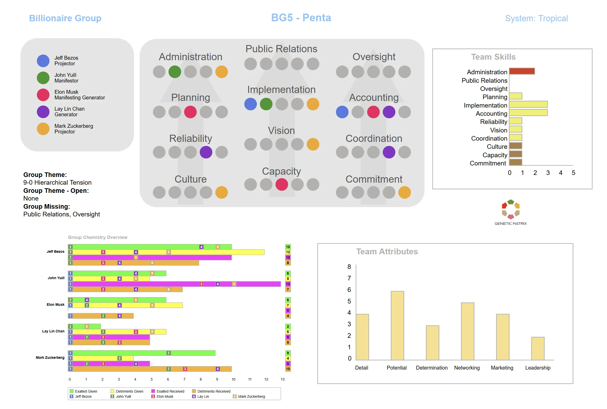

BG5 applica le meccaniche Penta di Human Design ai piccoli team aziendali. La stessa forma transpersonale che governa le famiglie modella anche come i team di 3-5 persone lavorano insieme.
BG5 (Business Group 5) è l'applicazione delle meccaniche Penta di Human Design ai piccoli team aziendali. La Penta è una forma energetica transpersonale che emerge quando 3-5 persone lavorano insieme all'interno del contatto aurico. Opera nello stesso modo sia che il gruppo sia una famiglia o un team di lavoro. BG5 usa una terminologia orientata al business per rendere queste meccaniche più accessibili in un contesto professionale.
In BG5, i concetti individuali di Human Design sono tradotti in linguaggio aziendale. I Tipi diventano Tipi di Carriera, i Centri diventano Funzioni Aziendali, i Canali diventano Punti di Forza, e le Porte diventano Competenze. Le meccaniche sottostanti rimangono le stesse, ma l'inquadramento si sposta per concentrarsi sulla produttività del team, l'allineamento dei ruoli e le dinamiche di gruppo nel luogo di lavoro.
Tipi in linguaggio aziendale
BG5 traduce i Tipi di Human Design in Tipi di Carriera. I Classic Builder (Generatori) forniscono energia sostenibile per la forza lavoro. Gli Express Builder (Generatori Manifestanti) combinano energia di costruzione con iniziativa. Gli Advisor (Proiettori) guidano e gestiscono l'energia degli altri. Gli Innovator (Manifestatori) iniziano e portano le cose all'esistenza. Gli Evaluator (Riflettori) riflettono la salute del team.
Da 3 a 5 persone in un team
Quando 3-5 persone lavorano insieme e sono all'interno del contatto aurico, la Penta si attiva e inizia a condizionare ogni membro per servire ruoli funzionali specifici. La Penta ha il suo proprio set di Canali che rappresentano funzioni aziendali centrali: gestire risorse, comunicare strategia, eseguire compiti e mantenere la coesione del team. La composizione del team determina quali funzioni sono naturalmente coperte.
Punti di forza, competenze e attributi delle competenze
In BG5, i Canali sono chiamati Punti di Forza, le Porte sono chiamate Competenze e le Linee sono intese come attributi delle competenze. Questi termini traducono le meccaniche di Human Design in linguaggio aziendale senza cambiare la struttura sottostante. Quando il design di un membro del team attiva una particolare Porta o Canale all'interno della Penta, quella persona contribuisce una capacità aziendale specifica al gruppo. Dove mancano attivazioni, possono apparire lacune nel funzionamento del team, spesso richiedendo compensazione attraverso assunzioni, esternalizzazione o maggiore consapevolezza.
Funzioni non coperte
Le lacune nella Penta Aziendale si verificano quando il design di nessun membro del team attiva una Competenza richiesta. Queste lacune creano vulnerabilità. Il team può avere difficoltà con la funzione che quella lacuna rappresenta, spesso sovracompensando in modi che influenzano l'equilibrio della Penta, o singoli membri possono essere condizionati a riempire un ruolo che non corrisponde ai loro punti di forza naturali. Identificare le lacune aiuta a spiegare dove il team probabilmente sperimenterà distorsione o instabilità.
Meccaniche di leadership nel team
La Penta ha le sue proprie meccaniche di leadership. Il ruolo Alfa non è necessariamente tenuto dalla persona con il titolo di lavoro più alto. È determinato da chi porta il maggior numero di Canali Penta definiti. Comprendere questo aiuta a spiegare perché alcuni team hanno dinamiche di potere che non corrispondono alla gerarchia formale.
Il passaggio dall'individuale al gruppo
In Human Design individuale, l'attenzione è su vivere il proprio design attraverso la propria Strategia e Autorità. In BG5, l'attenzione si sposta su come gli individui contribuiscono alla struttura meccanica del team. Una persona può essere altamente efficace individualmente ma poco adatta per un ruolo specifico all'interno di una particolare configurazione Penta. BG5 aiuta ad allineare i punti di forza individuali con i bisogni del team.
Composizione strategica del team
BG5 può informare le decisioni di assunzione identificando quali Competenze mancano da un team. Piuttosto che assumere basandosi solo su curriculum o personalità, BG5 indica quali lacune meccaniche devono essere riempite. Questo può migliorare la funzione del team assicurando che le competenze centrali del gruppo siano coperte da persone che portano naturalmente le Porte o i Canali Penta richiesti.
Come i team processano le informazioni
Le Zone della Penta determinano come le informazioni fluiscono all'interno del team. Alcune configurazioni creano efficienza naturale nelle riunioni e nel processo decisionale. Altre creano colli di bottiglia o punti ciechi. Comprendere le meccaniche di comunicazione del team aiuta a strutturare riunioni e flussi di lavoro in modi che si allineano con lo stile di elaborazione naturale del gruppo.
Nota
BG5 usa una terminologia diversa rispetto al Human Design standard, ma le meccaniche sottostanti sono identiche alla Penta Familiare. La stessa forma transpersonale che modella le dinamiche familiari governa anche le dinamiche dei piccoli team nel luogo di lavoro.
Una carta di team BG5 mostra come i design di 3-5 persone si combinano in una Penta Aziendale condivisa. Rivela i punti di forza del team, le funzioni mancanti, i temi del gruppo e le meccaniche che modellano come il team lavora insieme.

Esempio di carta di team BG5 che mostra Competenze, chimica del team e attributi del team. Clicchi per ingrandire.
BG5 (Business Group 5) è l'applicazione delle meccaniche Penta di Human Design ai piccoli team aziendali di 3-5 persone. Usa una terminologia orientata al business per descrivere come la forma Penta transpersonale modella le dinamiche del team, l'assegnazione dei ruoli e la produttività del gruppo. Le meccaniche sottostanti sono identiche alla Penta Familiare.
I Tipi di Carriera sono la traduzione BG5 dei Tipi di Human Design in linguaggio aziendale. I Generatori diventano Classic Builder, i Generatori Manifestanti diventano Express Builder, i Proiettori diventano Advisor, i Manifestatori diventano Innovator e i Riflettori diventano Evaluator. Ogni Tipo di Carriera descrive un modo distinto di contribuire all'energia e al flusso di lavoro del team.
Nella terminologia BG5, i Canali sono chiamati Punti di Forza, le Porte sono chiamate Competenze e le Linee sono intese come attributi delle competenze. Questi termini descrivono le stesse meccaniche sottostanti in linguaggio aziendale. Quando mancano attivazioni chiave da un team, il risultato può essere lacune che influenzano come funziona la Penta Aziendale.
BG5 può identificare quali Competenze mancano dalla configurazione Penta di un team. Comprendendo le lacune meccaniche, i team possono prendere decisioni di assunzione più strategiche basate su quali funzioni devono essere riempite. Questo aiuta a garantire che la struttura meccanica del team sia supportata da persone che portano naturalmente le Porte o i Canali Penta richiesti.
Sì. Genetic Matrix fornisce strumenti di analisi BG5 che Le permettono di vedere il Suo Tipo di Carriera, identificare meccaniche di design rilevanti all'interno del Suo team e analizzare la configurazione della Penta Aziendale. Può generare rapporti di team per comprendere come i design individuali contribuiscono alla struttura meccanica del gruppo.
Esplori le meccaniche transpersonali che emergono in piccoli gruppi familiari di 3-5 persone.
Quando i gruppi crescono oltre 5, emerge una forma transpersonale più grande chiamata WA.
Quando due persone si uniscono, emerge un nuovo design. Esplori le meccaniche delle relazioni uno-a-uno.
Generi una carta di team BG5 per vedere i Punti di Forza, le Competenze, le lacune e le dinamiche che modellano il Suo piccolo team aziendale.
Get Pro →